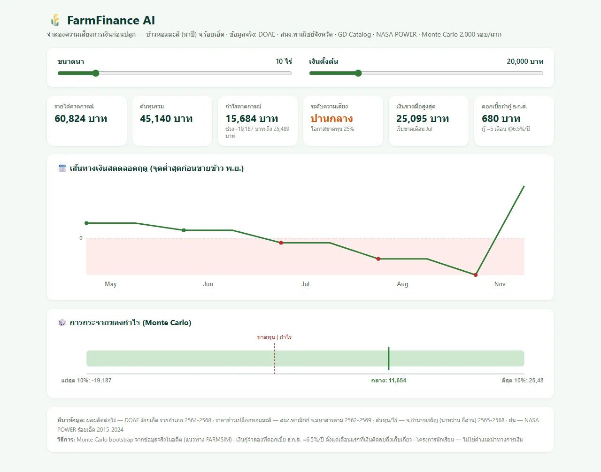

FarmFinance AI
ตัวจำลองความเสี่ยงการเงินก่อนปลูกสำหรับชาวนาไทย
SYSTEM BUILDERWORKING PROTOTYPE
รวมข้อมูลเกษตรภาครัฐ กระแสเงินสดรายเดือน Monte Carlo และโมดูลเงินกู้ เพื่อช่วยให้เกษตรกรเห็นโอกาสขาดทุนก่อนตัดสินใจปลูก
ระบบมีทั้ง LINE bot และแดชบอร์ด offline พร้อม backtest แบบ leave-future-out โครงการประกาศสมมติฐานและข้อจำกัดของข้อมูลอย่างชัดเจน และไม่ใช้แทนคำแนะนำทางการเงิน
TECHNICAL FOCUS
PythonMonte CarloPublic DataLINE Bot